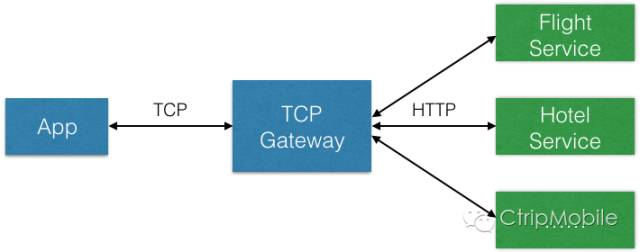
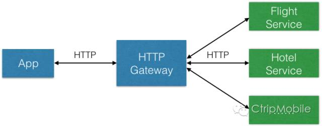
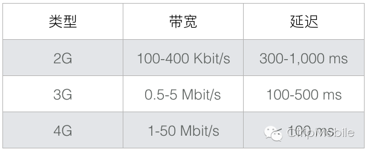
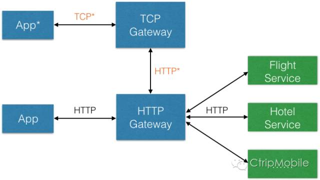
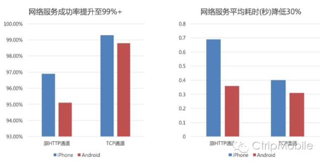
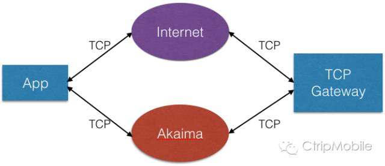
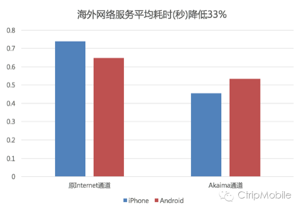

App网络服务的高可靠和低延迟对于无线业务稳定发展至关重要，过去两年来我们一直在持续优化App网络服务的性能，到今年Q2结束时基本完成了App网络服务通道治理和性能优化的阶段性目标，特此撰文总结其中的经验教训，为以后的工作打下基础。
2014年携程为无线服务开发了Mobile Gateway，有两种类型：TCP Gateway和HTTP Gateway。 TCP Gateway设计用于App中Native业务网络服务，基于TCP协议之上设计了应用层协议，类似于RPC机制。TCP Gateway兼具了接入层和服务动态路由的功能，接入层的功能基于Netty实现，管理客户端的TCP长连接或者短连接；动态路由的功能基于Netfix开源的Zuul实现（Zuul is a gateway service that provides dynamic routing, monitoring, resiliency, security, and more. ），可以在TCP Gateway上实现服务路由、监控、反爬和用户鉴权等功能。

每个TCP服务请求到达TCP Gateway之后，会根据报文头中的服务号，转发到后端对应的业务服务集群上，从而实现后端服务的解耦。TCP Gateway到后端业务服务集群之间的转发使用HTTP协议的接口形式实现，一个TCP服务请求的完整报文会作为HTTP请求的Payload转发到后端业务服务集群，接收到HTTP响应后，会将其Payload完整的返回到对应的TCP连接中。
HTTP Gateway用于App中Hybrid和H5 Web站点的网络服务，采用HTTP Restful接口形式提供服务，其逻辑相对简单，核心是HTTP服务动态转发的功能。

Mobile Gateway的更多设计实现细节可以参考王兴朝同学在2015上海QCon的演讲《携程无线Gateway》。
带宽和延迟是影响网络服务性能的两个因素，带宽受网络通道上最小带宽的网段限制，延迟是网络包在客户端和服务端之间的来回传输时长，不同网络类型上的带宽和延迟差别非常大（见下图）。

我们要实现更好性能的网络服务，对于网络自身的带宽和延迟这两点而言，能做只是尽可能选择最合适的网络通道，其他只能在如何使用网络通道上进行优化。
传统的非IM即时消息类App通常都是使用HTTP协议来实现网络服务的（Restful API形式），携程使用TCP协议来实现，确实会增加很多开发成本，例如需要设计应用层协议、管理网络连接、处理异常等，但下面几点原因还是让我们最终选择基于TCP协议来实现App网络服务：
携程用户有时会在网络环境非常差的景区使用，需要针对弱网进行特别的优化，单纯HTTP应用层协议很难实现；
HTTP请求首次需要进行DNS域名解析，我们发现国内环境下针对携程域名的失败率在2-3%（包含域名劫持和解析失败的情况），严重影响用户体验；
HTTP虽然是基于TCP协议实现的应用层协议，优势是封装性好，客户端和服务端解决方案成熟。劣势是可控性小，无法针对网络连接、发送请求和接收响应做定制性的优化，即使是HTTP的特性如保持长连接KeepAlive或者管道Pipeline等都会受制于网络环境中的Proxy或者服务端实现，很难充分发挥作用。
基于TCP协议实现可以让我们能够完整控制整个网络服务生命周期的各个阶段，包括如下几个阶段：
我们的网络服务通道治理和优化工作就是从这几个方面展开的。
1. 告别DNS，直接使用IP地址
如果是首次发送基于HTTP协议的网路服务，第一件事就是进行DNS域名解析，我们统计过DNS解析成功率只有98%，剩下2%是解析失败或者运营商DNS劫持（Local DNS返回了非源站IP地址），同时DNS解析在3G下耗时200毫秒左右，4G也有100毫秒左右，延迟明显。我们基于TCP连接，直接跳过了DNS解析阶段，使用内置IP列表的方式进行网络连接。
携程App内置了一组Server IP列表，同时每个IP具备权重。每次建立新连接，会选择权重最高的IP地址进行连接。App启动时，IP列表的所有权重是相同的，此时会启动一组Ping的操作，根据Ping值的延迟时间来计算IP的权重，这么做的原理是Ping值越小的IP地址，连接后的网络传输延迟也应该相对更小。业界也有使用HTTP DNS方式来解决DNS劫持问题，同时返回最合适用户网络的Server IP。然而HTTP DNS的开发和部署需要不小的开发成本，我们目前没有使用。
内置Server IP列表也会被更新，每次App启动后会有个Mobile Config服务（支持TCP和HTTP两种网络类型服务）更新Server IP列表，同时支持不同产品线的Server IP列表更新。因此，传统DNS解析能够解决多IDC导流的功能也可以通过此方法解决。
2. Socket连接优化，减少连接时间
和HTTP协议中的Keepalive特性一样，最直接减少网络服务时间的优化手段就是保持长连接。每次TCP三次握手连接需要耗费客户端和服务端各一个RTT（Round trip time）时间才能完成，就意味着100-300毫秒的延迟；TCP协议自身应对网络拥塞的Slow Start机制也会影响新连接的传输性能。
携程App使用了长连接池的方式来使用长连接，长连接池中维护了多个保持和服务端的TCP连接，每次网络服务发起后会从长连接池中获取一个空闲长连接，完成网络服务后再将该TCP连接放回长连接池。我们没有在单个TCP连接上实现Pipeline和Multiplexing机制，而是采用最简单的FIFO机制，原因有二：1. 简化Mobile Gateway的服务处理逻辑，减少开发成本；2. 在服务端同时返回多个响应时，如果某个响应报文非常大，使用多个长连接方式可以加快接收服务响应报文速度。
如果发起网络服务时长连接池中的TCP连接都正在被占用，或者TCP长连接的网络服务失败，则会发起一个TCP短连接实现网络服务。这里长连接和短连接的区别仅仅是服务完成后是否直接关闭这个TCP连接。
附：Pipeline和Multiplexing是有区别的，如HTTP/1.1支持Pipeline，客户端能否同时发送多个请求，但是服务端返回响应时也要按照请求的发送次序来返回响应；SPDY和HTTP/2协议支持Multiplexing，即支持响应报文的乱序返回，发送请求和接收响应互不干扰，因此避免了HTTP/1.1 Pipeline也没能完全解决的Head of line blocking问题。参考资料：1, 2。参考资历2中提到HTTP/1.1的Pipeline特性只是部分解决了Head of line blocking问题，因为a large or slow response can still block others behind it。
3. 弱网和网络抖动优化
携程App引入了网络质量参数，通过网络类型和端到端Ping值进行计算，根据不同的网络质量改变网络服务策略：
1) 调整长连接池个数：例如在2G/2.5G Egde网络下，会减少长连接池个数为1（运营商会限制单个目标IP的TCP连接个数）；WIFI网络下可以增加长连接池个数等机制；
2) 动态调整TCP connection、write、read的超时时间；
3) 网络类型切换时，例如WIFI和移动网络、4G/3G切换至2G时，客户端IP地址会发生变化，已经连接上的TCP Socket注定已经失效（每个Socket对应一个四元组：源IP、源Port、目标IP、目标Port），此时会自动关闭所有空闲长连接，现有网络服务也会根据状态自动重试。
4. 数据格式优化，减少数据传输量和序列化时间
传输数据量越小，在相同TCP连接上的传输时间越短。携程App曾经使用自行设计的一套数据格式，后来和Google ProtocolBuffer对比后发现，特定数据类型下数据包大小会降低20-30%，序列化和反序列化时间可以降低10-20%，因此目前核心服务都在逐步迁移到到ProtocolBuffer格式。另外Facebook曾分享过他们使用FlatBuffer数据格式提高性能的实践，我们分析后不太适合携程的业务场景因而没有使用。
5. 引入重试机制，提升网络服务成功率
受TCP协议重传机制来保证可靠传输的机制启发，我们在应用层面也引入了重试机制来提高网络服务成功率。我们发现90%以上的的网络服务失败都是由于网络连接失败，此时再次重试是有机会连接成功并完成服务的；同时我们发现前面提到的网络服务生命周期处于1建立连接、序列化网络请求报文、发送网络请求这三个阶段失败时，都是可以自动重试的，因为我们可以确信请求还没有达到服务端进行处理，不会产生幂等性问题（如果存在幂等性问题，会出现重复订单等情况）。当网络服务需要重试时，会使用短连接进行补偿，而不再使用长连接。
实现了上述机制后，携程App网络服务成功率由原先的95.3%+提升为如今的99.5%+（这里的服务成功率是指端到端服务成功率，即客户端采集的服务成功数除以请求总量计算的，并且不区分当前网络状况），效果显著。
6. 其他网络服务机制 & Tricks
携程App也实现了其他一些网络服务机制方便业务开发，如网络服务优先级机制，高优先级服务优先使用长连接，低优先级服务默认使用短连接；网络服务依赖机制，根据依赖关系自动发起或取消网络服务，例如主服务失败时，子服务自动取消。
开发过程中我们也发现一些移动平台上的TCP Socket开发tricks：
1) iOS平台上的原生Socket接口创建连接并不会激活移动网络，这里原生Socket接口是指POSIX Socket接口，必须使用CFSocket或者再上层的网络接口尝试网络连接时才会激活网络。因此携程App启动时会优先激活注册一些第三方SDK以及发送HTTP请求来激活移动网络；
2) 合理设置Socket的几个参数：SOKEEPALIVE参数确保TCP连接保持（注：此KeepAlive是TCP中的属性，和HTTP的KeepAlive是两个场景概念），SONOSIGPIPE参数关闭SIGPIPE事件，TCP_NODELAY参数关闭TCP Nagle算法的影响；
3) 由于iOS要求支持IPv6-Only网络，因此使用原生Socket必须支持IPv6；
4) 如果使用select来处理nonblocking IO操作，确保正确处理不同的返回值和超时参数；
5) 保持TCP长连接可用性的心跳机制：对于非IM类应用而言，心跳机制的作用不大，因为用户会不断触发请求去使用TCP连接，尤其在携程业务场景下，通过数据统计发现使用心跳与否对服务耗时和成功率影响极小，因此目前已经关闭心跳机制。原先的心跳机制是TCP长连接池中的空闲TCP连接每60秒发送一个心跳包到Gateway，Gateway返回一个心跳响应包，从而让双方确认TCP连接有效。
携程App中有相当比例的业务是使用Hybrid技术实现的，运行在WebView环境中，其中的所有网络服务（HTTP请求）都是由系统控制的，我们无法掌控，也就无法进行优化，其端到端服务成功率也仅有97%左右（注：这里指页面中业务逻辑发送的网络服务请求，而非静态资源请求）。
我们采用了名为『TCP Tunnel for Hybrid』的技术方案来优化Hybrid网络服务，和传统HTTP加速产品的方法不同，我们没有采用拦截HTTP请求再转发的方式，而是在携程Hybrid框架中的网络服务层进行自动切换。

如图所示，该技术方案的流程如下：
如果App支持TCP Tunnel for Hybrid，Hybrid业务在发网络服务时，会通过Hybrid接口转发至App Native层的TCP网络通讯层，该模块会封装这个HTTP请求，作为TCP网络服务的Payload转发到TCP Gateway；
TCP Gateway会根据服务号判断出是Hybrid转发服务，解包后将Payload直接转发至HTTP Gateway，此HTTP请求对HTTP Gateway是透明的，HTTP Gateway无需区分是App直接发来的还是TCP Gateway转发来的HTTP请求；
后端业务服务处理完成后，HTTP响应会经HTTP Gateway返回给TCP Gateway，TCP Gateway将此HTTP响应作为Payload返回给App的TCP网络通讯层；
TCP网络通讯层会再将该Payload反序列化后返回给Hybrid框架，最终异步回调给Hybrid业务调用方。整个过程对于Hybrid业务调用方也是透明的，它并不知道TCP Tunnel的存在。
采用该技术方案后，携程App中Hybrid业务的网络服务成功率提升至99%以上，平均耗时下降了30%。

携程目前没有部署海外IDC，海外用户在使用App时需要访问位于国内的IDC，服务平均耗时明显高于国内用户。我们采用了名为『TCP Bypass for Oversea』的技术方案来优化海外网络服务性能，主要是使用了Akaima的海外专属网络通道，同时在携程国内IDC部署了局端设备，使用专用加速通道的方式来提升海外用户体验。

海外用户启动App后先通过Akaima定制域名获取Server IP，所有网络服务优先走Akaima通道；如果Akaima通道的网络服务失败并且重试机制生效时，会改走传统Internet通道进行重试。相比只用传统Internet通道，在保持网络服务成功率不变的情况下，使用Akaima通道Bypass技术后平均服务耗时下降了33%。

过去两年我们的网络服务优化工作都是基于TCP协议实现的，基本达到了优化目标。不过这两年来新的应用层网络协议SPDY和HTTP/2逐步迈入主流，基于UDP的QUIC协议看起来也非常有趣，值得跟进调研。
SPDY & HTTP/2
SPDY是Google基于TCP开发的网络应用层协议，目前已经停止开发，转向支持基于SPDY成果设计的HTTP/2协议，HTTP/2协议的核心改进其实就是针对HTTP/1.x中影响延迟性能的痛点进行优化：
官方性能测试结果显示使用SPDY或者HTTP/2的页面加载时间减少30%左右，不过这是针对网页的测试结果，对于App中的网络服务，具体优化效果我们还在进行内部测试，不过其优化手段看和目前我们使用TCP协议的优化手段类似，因此性能优化效果可能不会很显著。
QUIC
QUIC是Google基于UDP开发的应用层协议，UDP协议无需连接，不存在重传机制，因此应用层需要保证服务的可靠性。目前国内腾讯有针对弱网络尝试过QUIC协议，我们也在进行测试，最终是否会采用还需要看测试的结果。
技术只是手段，最终还是要反映在业务效果上。我们已经实现除静态资源等需要访问CDN的网络请求外，其他App网络服务使用统一的TCP通道，从而具备更好的性能调优和业务监控能力。
携程目前基于TCP协议的各种App网络服务优化，也是各种技术方案的平衡，虽然目前HTTP/2等新协议逐步成熟，但是TCP协议自身的灵活性支持有针对性的性能优化，还是具备其特别的优势，希望我们的实践总结能对国内无线技术从业者有一些借鉴价值。
作者：陈浩然，携程无线开发总监，计算机博士，2008年iOS SDK发布后，投身移动互联网。先后在外企、创业型和国内一线旅游公司从事无线App的开发工作，从企业级App、独立App到亿级用户量级的App都有全程参与。
责编：钱曙光，关注架构和算法领域，寻求报道或者投稿请发邮件qianshg@csdn.net，另有「CSDN 高级架构师群」，内有诸多知名互联网公司的大牛架构师，欢迎架构师加微信qshuguang2008申请入群，备注姓名+公司+职位。


.jpg)
.jpeg)
已有0条评论